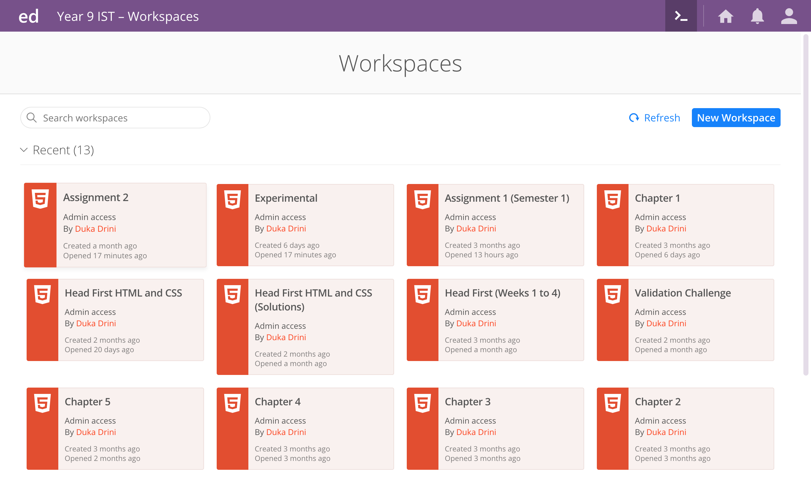
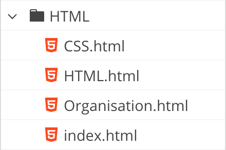

Importance of Organisation
Without an acceptable degree of organisation in a coder's HTML project, it would be much more difficult to successfully complete a well-made website.
Applications
There are an array of HTML coding applications, that help you in your coding. Some of these include Edstem or Atom.
These types of coding apps have one main thing in common, being that users can organise their work in a well-planned fashion.
Workspaces
Workspaces, or new projects, are the basis for a new website being made.
Workspaces hold folders, which then contain files.

Folders
Found within workspaces, folders contain various files to store in a neat manner.

Files
Files, such as HTML or CSS files, are contained within workspaces and folders. Though the smallest part of a website, it may be one of the most incremental areas of a webpage.
HTML Files
HTML files must have an ending of .html, otherwise the file will be invalid and will not function.
CSS Files
CSS files must have an ending of .css, otherwise the file will be invalid and will not function.
Overview
In the above content, you have read about the basics of organising a project related to HTML and CSS. The actions you take towards well constructed workspaces, folders and files, will ensure you create your best webpage!